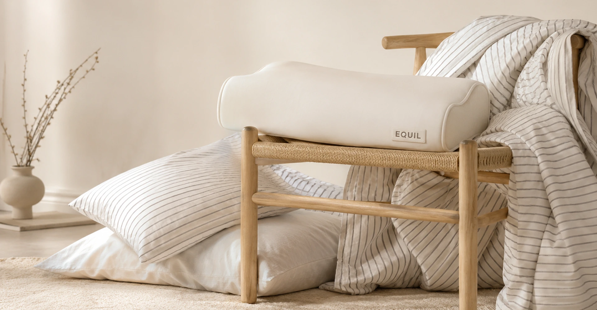
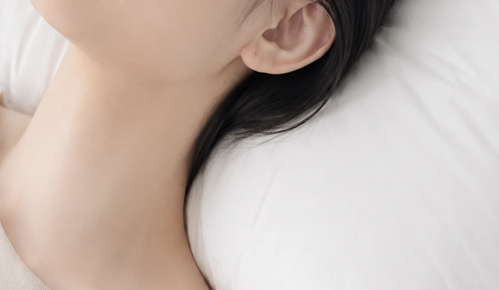
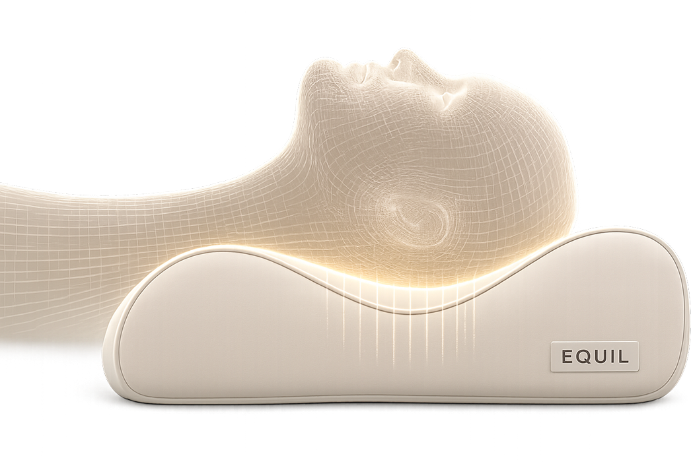
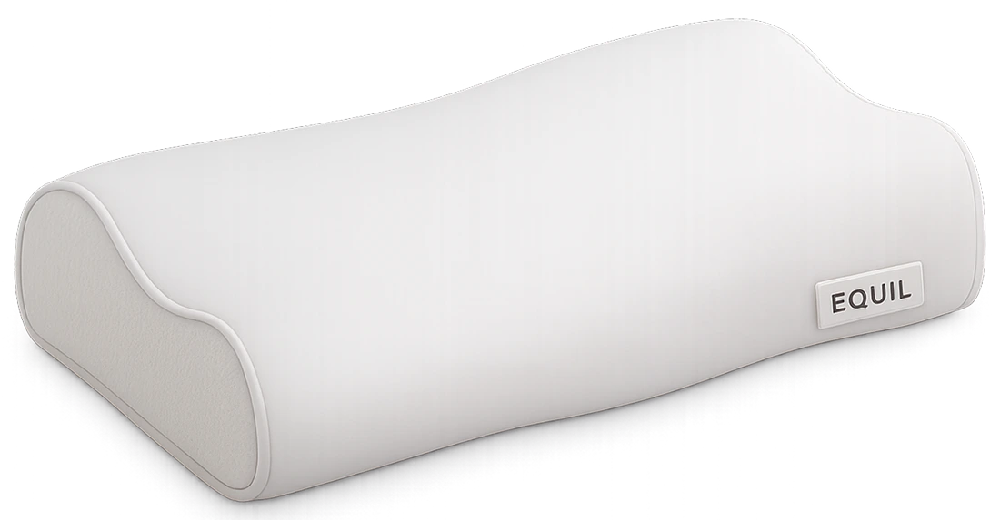
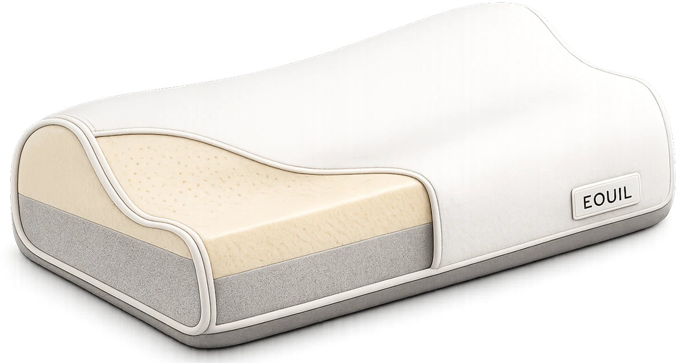

01
경추 지지 곡선
하단의 볼록한 구조가 목 아래의 빈 공간을 채워주며,
경추가 과도하게 꺾이거나 처지는 현상을 줄여줍니다.

사람마다 다른 목의 곡선과 수면 자세를 분석해,
머리와 목이 가장 편안하게 놓이는 높이와 구조를 설계했습니다.
THREE ZONES, ONE BALANCED COMFORT THREE ZONES
머리 수용, 목 지지, 형태 안정의 세 가지 기능이 조화를 이루도록 설계했습니다.

베개가 너무 높거나 낮으면 머리가 앞뒤로 기울어
목의 자연스러운 곡선이 흐트러질 수 있습니다.
또한 목 아래 공간이 비어 있으면
경추 주변에 긴장이 남을 수 있습니다.
어깨와 머리 사이의 공간을 충분히 채우지 못하면
머리가 한쪽으로 기울어질 수 있습니다.
반대로 베개가 너무 높으면 목이 위로 꺾여 불편함이 생길 수 있습니다.
목디스크나 경추 불편함이 있는 경우
작은 높이 차이에도 목이 쉽게 긴장할 수 있습니다.
지나치게 높거나 단단한 베개는 목을 압박하고,
불편한 자세를 오래 유지하게 만들 수 있습니다.

하단의 볼록한 구조가 목 아래의 빈 공간을 채워주며,
경추가 과도하게 꺾이거나 처지는 현상을 줄여줍니다.
중앙의 완만한 홈이 뒤통수를 편안하게 감싸
머리가 한쪽으로 치우치지 않도록 안정적으로 받쳐줍니다.
머리와 목에 집중되는 압력을 넓게 분산해
특정 부위가 눌리는 부담을 줄이고 편안한 착와감을 제공합니다.


Comfort Foam
머리의 압력을 편안하게 수용
Support Foam
목 지지부와 전체 높이를 안정적으로 유지
Stabilizing Base
베개가 과도하게 눌리거나 뒤틀리는 현상을 완화
Find Your Perfect Height